Stretches
ストレッチ解説
ストレッチ19種目のやり方と伸びる筋を、3Dの図で紹介します。部位で絞り込めます。
 ダウンドッグハムストリングス・腓腹筋・ヒラメ筋・広背筋
ダウンドッグハムストリングス・腓腹筋・ヒラメ筋・広背筋 カウチストレッチ(右)大腿直筋・大腿四頭筋・腸腰筋
カウチストレッチ(右)大腿直筋・大腿四頭筋・腸腰筋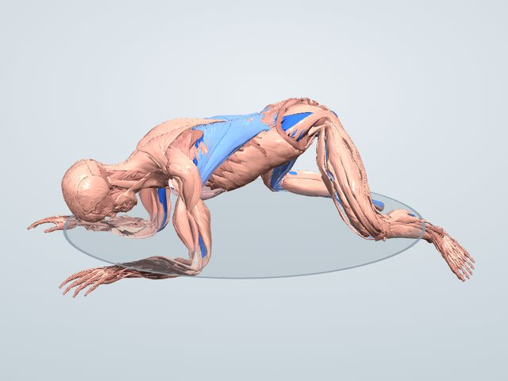
フロッグ(カエル足)内転筋群(大内転筋・長内転筋・薄筋・恥骨筋)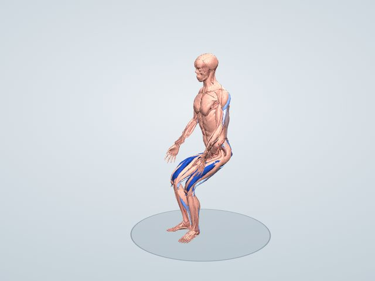
ディープスクワット(しゃがみこみ)ヒラメ筋・大殿筋・内転筋群・脊柱起立筋(腰)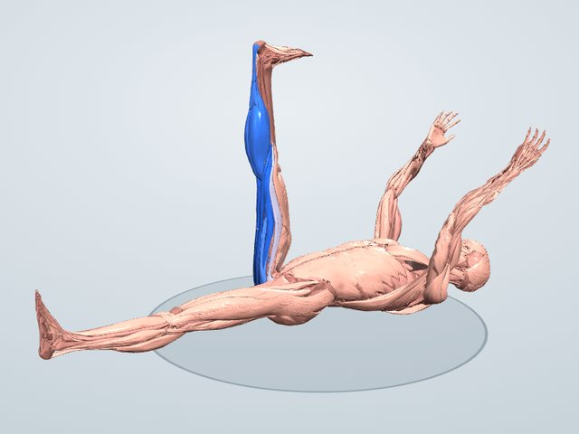
寝てもも裏(右・タオル)ハムストリングス・腓腹筋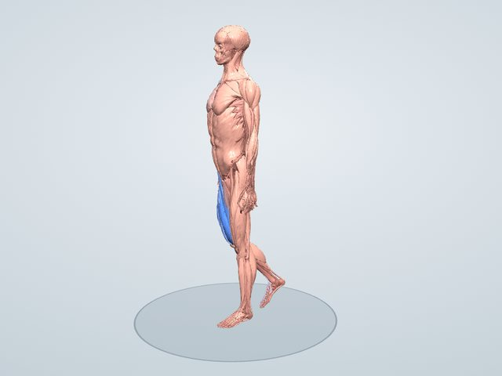
前もも(右)大腿四頭筋(とくに大腿直筋)・腸腰筋 腸腰筋(右脚を後ろ)腸腰筋・大腿直筋
腸腰筋(右脚を後ろ)腸腰筋・大腿直筋 ふくらはぎ(右・膝を伸ばす)腓腹筋・ヒラメ筋
ふくらはぎ(右・膝を伸ばす)腓腹筋・ヒラメ筋 4の字(右のお尻)梨状筋・大殿筋・中殿筋
4の字(右のお尻)梨状筋・大殿筋・中殿筋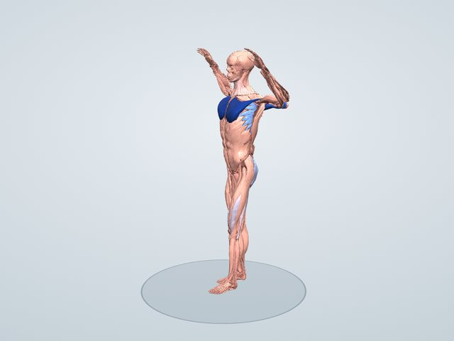
ドアで胸を伸ばす大胸筋・小胸筋・三角筋前部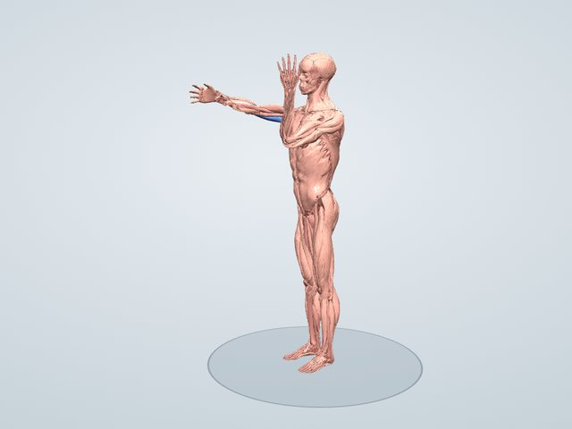
腕を胸の前で引く(右)三角筋後部・棘下筋・小円筋・菱形筋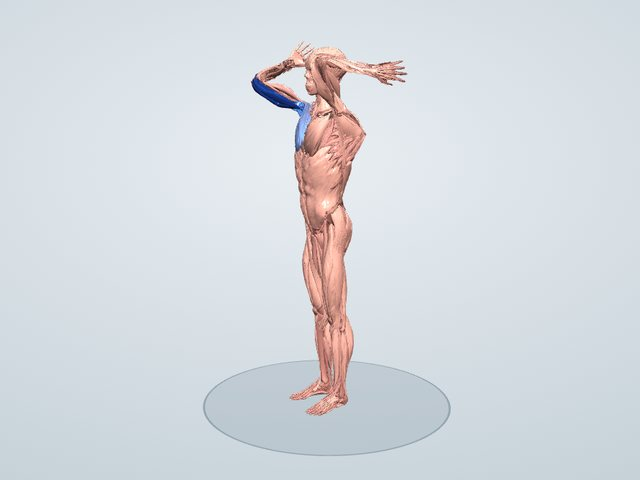
頭の後ろで肘を引く(右)上腕三頭筋・広背筋・大円筋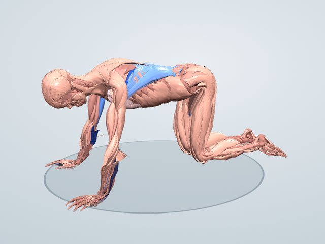
チャイルドポーズ広背筋・大円筋・脊柱起立筋・大殿筋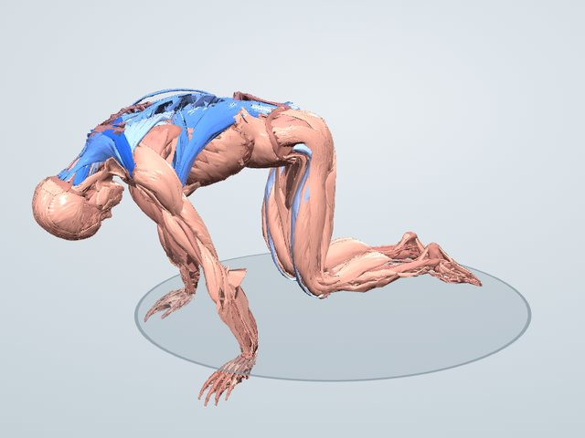
キャット(背中を丸める)脊柱起立筋・多裂筋・僧帽筋中部・菱形筋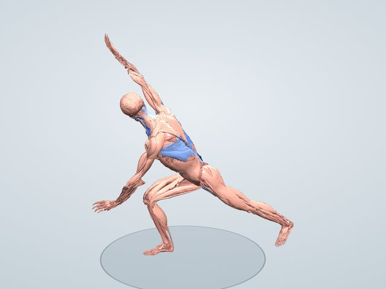
ワールドグレイテストストレッチ(右脚前)腸腰筋(後ろ脚)・大殿筋・ハムストリングス(前脚)・大胸筋・腹斜筋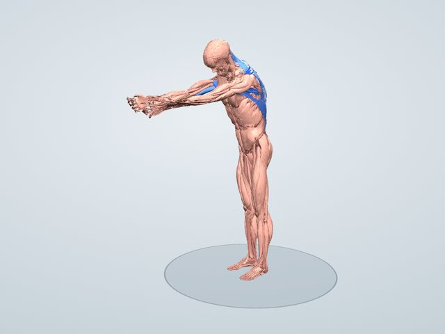
肩甲骨はがし(背中を丸める)菱形筋・僧帽筋中部・下部・三角筋後部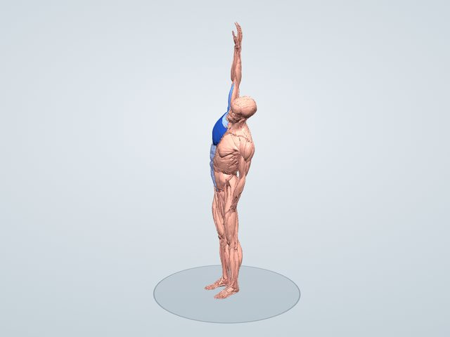
体の横を伸ばす(右)広背筋・腹斜筋・腰方形筋・大円筋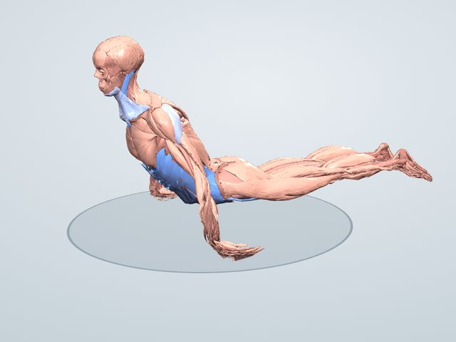
上体を反らす(コブラ)腹直筋・腹斜筋・腸腰筋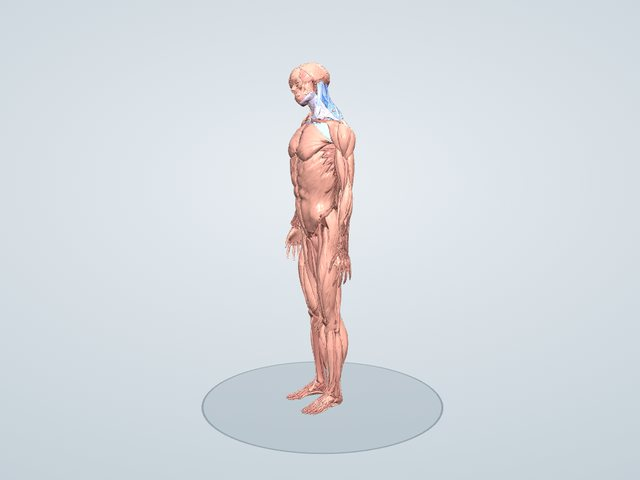
首の横(左側)僧帽筋上部・胸鎖乳突筋・斜角筋・肩甲挙筋